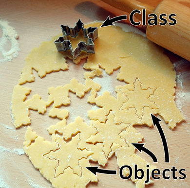
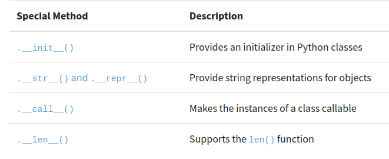

my_cat = "Nala"
print(type(my_cat))<class 'str'>Object Oriented Programming (OOP) es una manera de diseñar software que nos permite pensar en complejos programas en terminos de objetos del mundo real. OOP permite crear programas complejos, reducir los errores y reduce la repeteción de código.
En OOP, un programa o software se compone de muchos objetos individuales. Por ejemplo, un objeto en un programa basado en OOP puede ser una persona que tiene ciertos atributos (nombre, edad, dirección) y puede realizar ciertas acciones (caminar, hablar, respirar, comer, dormir).
Las clases en python se usan para crear objetos. Una manera de ver a las clases es como un molde de galleta y los objetos que creamos a partir de una clase, se les llama instancias que serian las galletas. Al proceso de crear los objetos a partir de una clase se le llama instantiation. Otro punto importante de recordar es quen con las clases se define el tipo de objeto y recuerda que con la función type se puede obtener la clase de objeto que para un objeto tipo string se obtiene “str”.

my_cat = "Nala"
print(type(my_cat))<class 'str'>Referencias
https://realpython.com/videos/what-object-oriented-programming-oop/
Para poder explicar mejor el método que se ejecuta para crear una instancia a partir de una clase vamos a ver como se define una clase y los diferentes elementos. Para crear una clase en python se usa la palabra reservada class seguida por el nombre de la clase con la primera letra en mayuscula.
Recordamos que los metodos son un tipo de función que esta definida dentro de una clase y que opera sobre instancias de esa clase. En la clase hay un método especial que se llama iniciador o initializer y se define con _ _init_ _. Este método que en otros lenguajes se le llama constructor es llamado cuando se crea un objeto o instancia a partir de la clase. Con este método se define los atributos que va a tener el objeto creado a partir de la clase. Por ejemplo, definimos una clase Galleta con atributos como nombre, color, olor e ingredientes:
class Galleta:
def __init__(self,nombre,color,olor,ingredientes):
self.nombre = nombre
self.color = color
self.olor = olor
self.ingredientes = ingredientesEn la definición de la clase se definen los atributos del objeto a crear. Es de notar que hay un atributo “self” que es una atributo usado para referenciar al propio objeto, por convención se usa “self” pero puede tener otro nombre y funcionar igual. En otras palabras estamos diciendo que a este objeto asignale al atributo nombre usando el argumento nombre que le pasamos al crear la instancia.
Estos atributos hasta ahora definidos son especificos para cada objeto creado, pero hay otro tipo de atributo llamados atributos de clase que son comunes entre todos los objetos y que tiene valores predeterminados . Vamos a ver en nuestro ejemplo donde se definen y algunas posibilidades:
class Galleta:
tipo = "Dulce"
forma_predeterminada = "Redonda"
def __init__(self,nombre,color,olor,ingredientes):
self.nombre = nombre
self.color = color
self.olor = olor
self.ingredientes = ingredientesPara crear un objeto a partir de esta clase le pasamos los atributos al nombre de la clase. En el siguiente ejemplo veremos como cada objeto creado tiene atributos de instancia especifico y atributos de clases comunes:
chocogalleta = Galleta(nombre="Chocogalleta",
color="oscuro",
olor="chocolate",
ingredientes=["harina", "chocolate", "leche","avena","azucar"])
print("Atributos para Chocogalleta")
print(f"color:{chocogalleta.color}")
print(f"ingredientes:{chocogalleta.ingredientes}")
print(f"tipo:{chocogalleta.tipo}")
galleta_avena = Galleta(nombre="Galleta de avena",
color="claro",
olor="canela y avena",
ingredientes=["harina", "leche","avena","canela","azucar"])
print("Atributos para galleta de Avena")
print(f"color:{galleta_avena.color}")
print(f"ingredientes:{galleta_avena.ingredientes}")
print(f"tipo:{galleta_avena.tipo}")Atributos para Chocogalleta
color:oscuro
ingredientes:['harina', 'chocolate', 'leche', 'avena', 'azucar']
tipo:Dulce
Atributos para galleta de Avena
color:claro
ingredientes:['harina', 'leche', 'avena', 'canela', 'azucar']
tipo:DulceReferencias
https://realpython.com/lessons/adding-attributes-python-class/
Referencias:
Texto
Referencias:
Texto
Referencias
Dunder viene de Double Underscore, es decir que son metodos que usan dos guiones abajo antes y despues (como _ init _). Se les llama tambien metodos mágicos o especiales. En otros lenguajes como Java, se tiene métodos privados o protegidos pero no en python, y se crearon como una manera para que los usuarios y programadores no traten de modificarlo.
Hay de diferentes tipos y la lista es muy larga. Para ver el detalle se puede ir a la documentación oficial de Python. Algunas de los métodos mas comunes son:

Por ejemplo, el metodo “str” nos da un texto que representa al objeto.
class Galleta:
tipo = "Dulce"
forma_predeterminada = "Redonda"
def __init__(self,nombre,color,olor,ingredientes):
self.nombre = nombre
self.color = color
self.olor = olor
self.ingredientes = ingredientes
def __str__(self):
return f"Soy {self.nombre} y tengo un sabroso olor a {self.olor}. Deberias de probarme"
galleta_avena = Galleta(nombre="Galleta de avena",
color="claro",
olor="canela y avena",
ingredientes=["harina", "leche","avena","canela","azucar"])
print(str(galleta_avena))Soy Galleta de avena y tengo un sabroso olor a canela y avena. Deberias de probarmeReferencia
https://realpython.com/python-magic-methods/
https://docs.python.org/3/reference/datamodel.html#specialnames